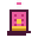
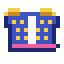

Now and then something special happens in the Guhmension: a cheese rain, the Vads parade, a star shower or the cosy party.
Af en toe gebeurt er iets bijzonders in de Guhmensie: een kaasregen, de Vadsparade, een sterrenregen of het Knusfeest.
Guh eventsGuh-evenementen
Guh events: every 2 to 3 Minecraft days you spend in the Guhmension, something happens around you outdoors. The chat announces it and a bar at the top shows the time left. In a kaasregen kaasknabbels rain from the sky for a minute: walk into them to catch them, and look out for the rare golden kaasknabbel, which tames any wild guh at once. Wild guhs come running for the knabbels too, and a guh that ate one is happy and much easier to tame. The Vadsparade marches by with the drumming Tamboerguh and ten dressed-up guhs. Walk along until the very end for confetti and a piece of the parade outfit for your guh (sjako, jacket, little drum), which you can only get from the parade. At night a sterrenregen can fall: pick up the stardust where the stars land, and where a starry guh appears, feed it quickly before it twinkles back up to the stars! (Operators can start one with /guhs evenement kaasregen|parade|sterrenregen.)
Guh-evenementen: ongeveer eens per 2 à 3 Minecraft-dagen in de Guhmensie gebeurt er buiten iets bij jou in de buurt. Je ziet het in de chat, en een balk bovenin laat zien hoe lang het nog duurt. Bij een kaasregen vallen er een minuut lang kaasknabbels uit de lucht: loop ertegenaan om ze te vangen, en let op de zeldzame gouden kaasknabbel, die elke wilde guh meteen tam maakt. De wilde guhs rennen ook op de knabbels af, en een guh die er een heeft opgesmuld is blij en veel makkelijker te temmen. De Vadsparade marcheert voorbij met de trommelende Tamboerguh en tien verklede guhs. Loop mee tot het allerlaatste eind voor confetti en een stuk van het paradepakje voor je guh (sjako, jasje, trommeltje), dat je alleen bij de parade krijgt. 's Nachts kan er een sterrenregen vallen: raap het sterrenstof op waar de sterren landen, en verschijnt er een sterrenguh, voer hem dan snel, voordat hij terug de sterren in twinkelt! (Operators starten er een met /guhs evenement kaasregen|parade|sterrenregen.)



